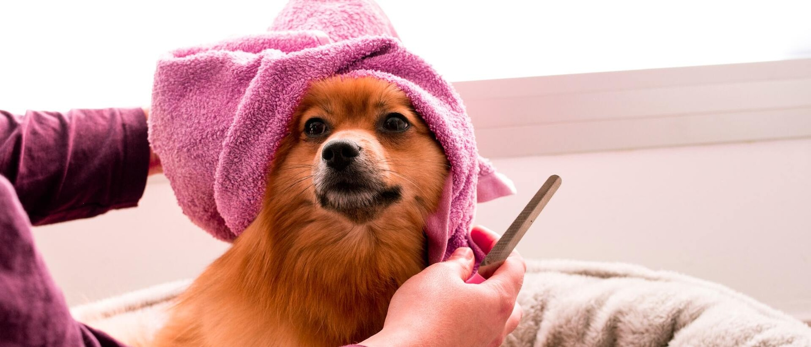
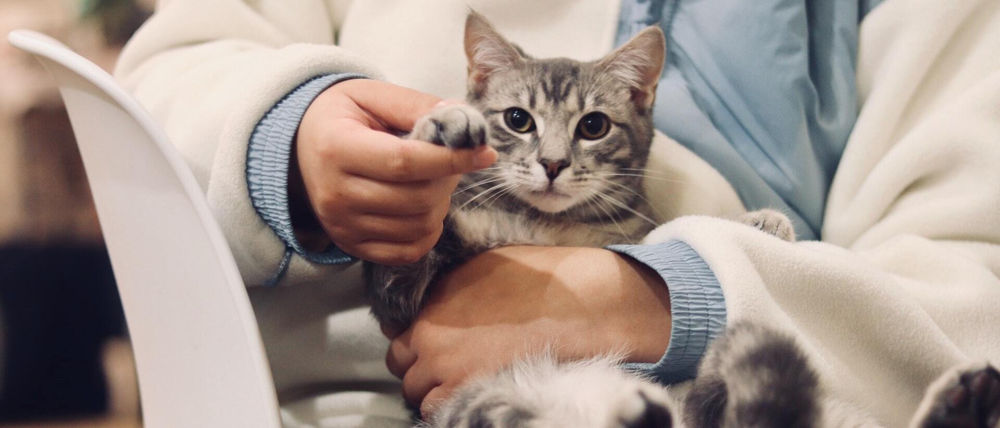
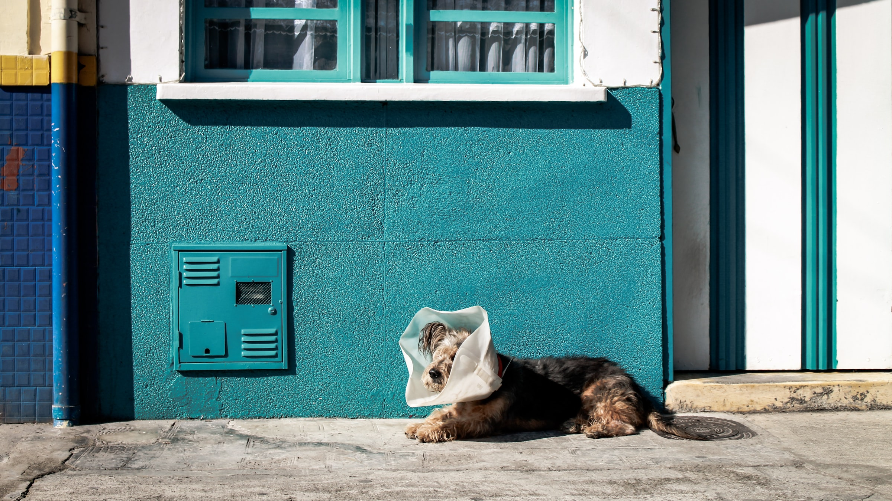

WOOF HAVEN

WOOF HAVEN

WOOF HAVEN
WOOF HAVEN

Suntem o organizație dedicată protecției și îngrijirii câinilor fără adăpost.
Ne-am înființat cu pasiune și dorința de a oferi un cămin sigur și iubitor pentru acești patrupezi nevinovați.
Suntem dedicați salvării și recuperării câinilor abandonați, oferindu-le îngrijire medicală, hrană și dragoste. Echipa noastră de voluntari și experți în domeniu lucrează împreună pentru a găsi fiecărui câine un cămin iubitor și permanent. Suntem mândri să facem o diferență în viețile acestor animale și să promovăm responsabilitatea față de animalele de companie.
Adoptarea unui animal de companie este o decizie importantă și minunată. Pentru a face această alegere cu înțelepciune, începeți prin cercetare. Alegeți cu grijă un animal care se potrivește stilului dvs. de viață și resurselor disponibile. Programați o întâlnire cu animalul ales, asigurați-vă că există o conexiune, apoi pregătiți-vă casa pentru noul membru al familiei. Nu uitați să oferiți afecțiune, îngrijire și atenție constantă animalului și să vă programați vizite regulate la medicul veterinar pentru o viață lungă și sănătoasă împreună. Adoptarea unui animal este o responsabilitate care aduce bucurie și satisfacție imensă

Max, un cățel de talie mică, este gata să-și găsească familia perfectă. Este jucăuș, iubitor, adoră să fie plimbat prin parc și este dornic să împartă dragoste. Max este o alegere minunată pentru oricine caută un companion fidel și vesel în viața lor.

Daisy este un adorabil cățeluș aflat în căutarea unei case iubitoare la centrul nostru de adopție. Cu o blană moale și ochi plini de afecțiune, Daisy este o prezență adorabilă. Ea este jucausă, prietenoasă și dornică să împartă dragostea ei cu o familie iubitoare.
Charlie, un câine prietenos de talie medie, a ajuns la adăpostul nostru cu inimă deschisă și o coadă mereu veselă. El a fost salvat de pe străzile aglomerate și își caută acum, cu nerăbdare, o casă primitoare. Charlie este prietenul ideal pentru o familie iubitoare.
Luna este plină de energie și iubire, fiind foarte jucausă. Ea este prietenoasă cu oamenii și alte animale de companie. Luna este vaccinată, sterilizată și gata să fie parte dintr-o familie iubitoare. Ea va fi un companion minunat pentru oricine își dorește un prieten devotat.
Dacă sunteți pasionat de binele animalelor, considerați să vă alăturați echipei noastre ca voluntar. Vă puteți implica în hrănirea și îngrijirea animalelor, în promovarea acestora sau în organizarea evenimentelor noastre.
Donațiile dumneavoastră sunt esențiale pentru susținerea animalelor fără stăpân. Cu fiecare donație, puteți ajuta la asigurarea hranei, a îngrijirii medicale și a locuințelor pentru aceste animale nevoiașe.
Puteți să sprijiniți adopțiile de animale prin simpla partajare a informațiilor noastre pe rețelele de socializare. Utilizați hashtag-urile noastre și ajutați la creșterea vizibilității animalelor disponibile pentru adopție.
Dacă doriți să contribuiți activ, puteți organiza evenimente pentru strângerea de fonduri sau pentru promovarea adopțiilor de animale în comunitatea dumneavoastră. Suntem aici pentru a vă ghida în această direcție.
© 2023 - Toate drepturile rezervate Pînzariu Denisa Luize
Telefon: 07XX-XXX-XXX
Email: dog-haven@gmail.com
Ne poți găsi și pe: